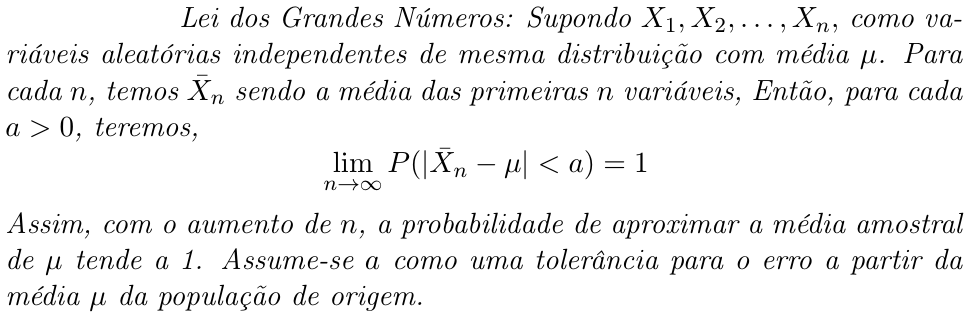

Eu e a Ciência (de Dados)
Sou Felipe Siconha, estudante de doutorado em modelagem computacional, amante da ciência, da interdisciplinaridade, de automobilismo e de um bom blues. Apaixonado por tranformar dados em informação útil.
Sou Felipe Siconha, estudante de doutorado em modelagem computacional, amante da ciência, da interdisciplinaridade, de automobilismo e de um bom blues. Apaixonado por tranformar dados em informação útil.
Olá, sou Felipe Siconha Souza Pereira, doutorando em modelagem computacional pelo Laboratório Nacional de Computação Científica (LNCC).
Eu me considero uma pessoa com perfil interdisciplinar e enorme prazer em buscar novos conhecimentos. Raros são os assuntos os quais eu não considero prazeroso aprender. Tenho grande interesse pelas ciências exatas e suas vertentes.
Desde o início de minha formação busquei estudar áreas distintas, pois acredito que a interdisciplinaridade é a chave para a resolução dos problemas do mundo atual.
Considero incrível a possibilidade de produzir insights a partir de dados oriundos das mais diversas fontes e me dedico a aprender cada vez mais a respeito. Tenho imensurável apreço pela estatística e o que ela proporciona quanto a compreensão de dados. Sou um entusiasta da área de Inteligência Artificial, principalmente no âmbito da Aprendizagem de Máquina, e busco constante aprendizado a respeito devido a visualizar os benefícios de suas aplicações.
Almejo vivenciar desafios e usar a tecnologia em prol de melhorias no cotidiano das pessoas. Quero poder participar e desenvolver soluções que proporcionem impactos benéficos à sociedade. Enfim, acredito que temos ferramental para tornar tudo melhor e devemos nos empenhar para tal.
2 de Fevereiro de 2018
A Lei dos Grandes Números
Comumente em uma análise exploratória de dados podemos nos deparar com o cenário em que temos de trabalhar com amostras para representar toda a população, i.e., o conjunto de dados em sua totalidade. Isso pode acontecer devido a, por exemplo, estarmos lidando com um conjunto de dados imensuravelmente grande, o que pode inviabilizar a análise de todos os dados. Sendo assim, aplicamos o processo de amostragem daquele conjunto de dados e então, realizamos os estudos embasados nos dados amostrados. A questão é: O conjunto amostrado realmente representa o conjunto original? Qual a confiança que podemos ter nessa representatividade? Desde que nosso interesse é analisar o conjunto de dados como um todo, esses questionamentos devem ser considerados.
Para respondê-las, podemos fazer uso da Lei dos Grandes Números. Vamos supor que queremos obter informação a respeito da média de um conjunto de dados.

31 de Janeiro de 2018
Livros
Os títulos a seguir agradam-me bastante e costumo recomendar a todos:
29 de Janeiro de 2018
Recomendação de leitura
Alguns livros relacionados à Ciência de Dados, que cito a aspirantes e entusiastas:
Cursos On-line
Alguns cursos disponíveis on-line, com oferta de certificado:
Seguem alguns de meus projetos, publicações e colaborações em trabalhos.
Artigo publicado no X Encontro Acadêmico de Modelagem Computacional, do LNCC:
Avaliação de Funções Empíricas de Scoring em Experimentos de Triagem Virtual em Larga Escala. Avaliação do desempenho de modelos preditivos aplicados a modelagem molecular através da análise de métricas estatísticas (i.e. ROC, AUC).
Resido atualmente em Petrópolis, região serrana do estado do Rio de Janeiro.
Considero oportunidades em outras localidades.
Coloco-me à disposição para contato, pelo e-mail felipesiconha@gmail.com.